Workflow: Native Redactions
IPRO uses an advanced native file redaction platform with highly efficient features to perform complex redactions within excel documents. They can be applied at the document-level, and mass redactions can be applied across multiple documents. This workflow will walk you through how to get started and apply a few typical redactions.
Getting Started
-
Create a search for the native documents or tag the native documents to be redacted.
|

|
Note: If you need assistance with creating your search, contact services@ipro.com.
|
-
Provide the following to the Services team by submitting a Ticket.
-
Name of the excel documents saved search or the name of the tag used.
-
Expected document count.
-
Name of the user(s) you wish to have use the Redaction Tool.
-
After entering your URL received from Services, the Log-In Screen will appear.

-
Enter your Username and Temporary Password that was provided to you. You will be prompted to create a new password.
The Casebook List window will appear.

-
Select your Casebook. The Document Viewer window will appear.

|
|
Note: When the Viewer first opens, it appears empty. You must select which document set you want to view.
|
-
From the Toolbar, click the down arrow on the Browse Document button and select Review Set.

-
The Select Review Set window will open. Select your Review Set and click the Select Review Set button.

-
You will have an option to select All Documents or Unique Only.

First Steps to Apply Redactions
Your Excel document will open in the Document Viewer.
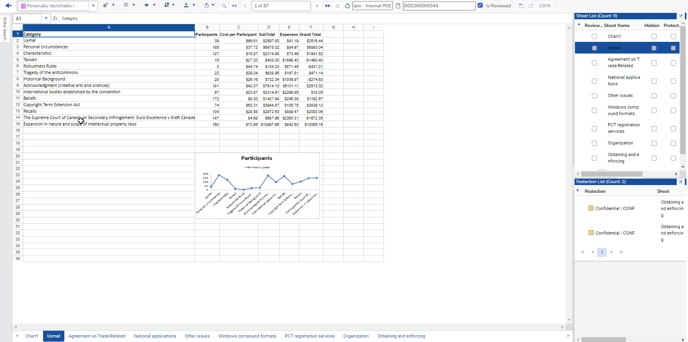
The first step is to select a redaction type from the Select Redaction Type dropdown list to apply redactions. Redactions are displayed in three formats as a Color, Long Name and Short Name as shown below.
-
Click the down arrow to select the Redaction Type. You are now ready to start applying redactions.

-
All redaction actions are accessed from the Toolbar>Redaction Options.
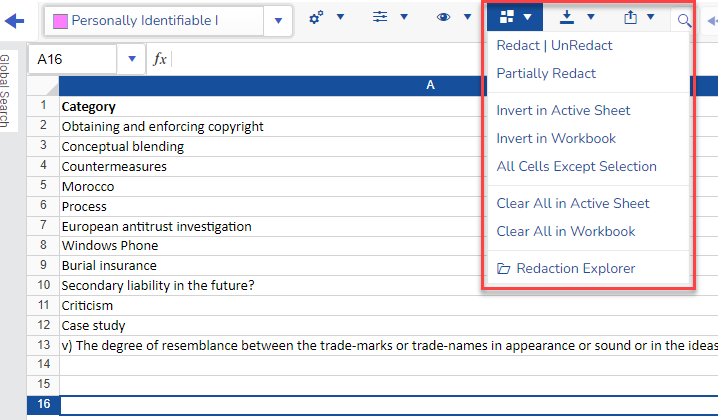
Redact Content by Column/Row
To redact a column or row of data, select the Redaction Type and then select the content to be redacted.
-
From the bottom of the viewer window, select the sheet you want to redact.
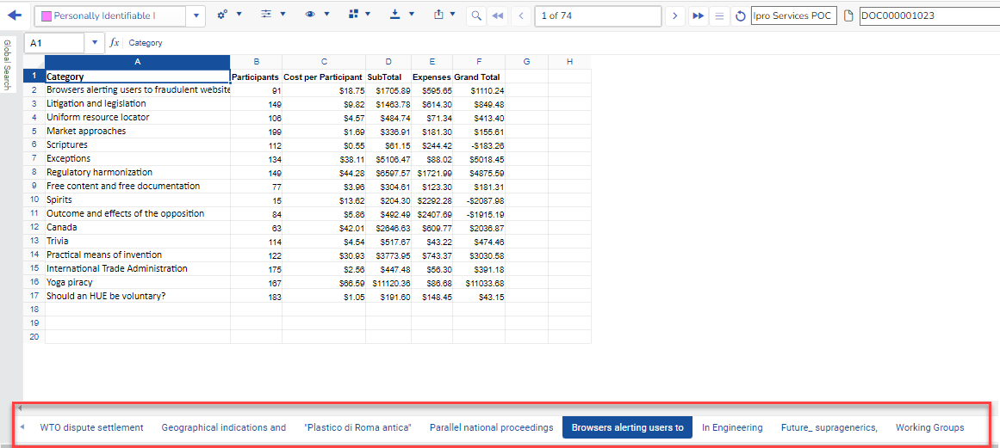
-
You can manually redact a cell range, or column by selecting it, and applying Mouse right-click. This also updates the Redaction List Count window on the right of the screen . You can navigate to each redaction you have made by clicking on the redaction in this window.
-
In the following example we have selected the redaction type Confidential | CONF. Next, we selected column B and applied Mouse right-click on it to redact the entire column.
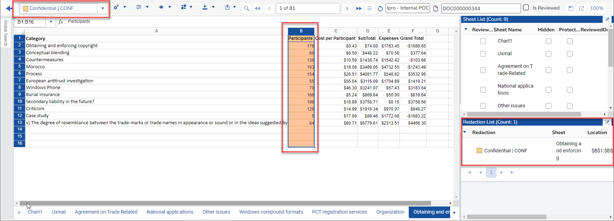
-
To redact a cell of data, do the same steps as listed above and then apply Mouse right-click on the cell to be redacted.
-
As you redact documents, the Is Reviewed checkbox helps to track the progress. Click to apply.
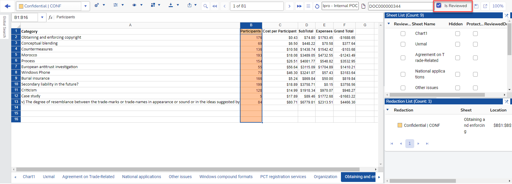
Partially Redact Content
You can redact individual terms from a cell.
-
Select the cell that contains the partial data that needs to be redacted.
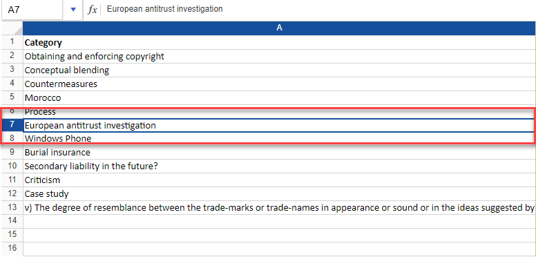
-
Click Partially Redact from the Toolbar>Redaction Options. The selection window will open.
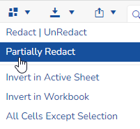
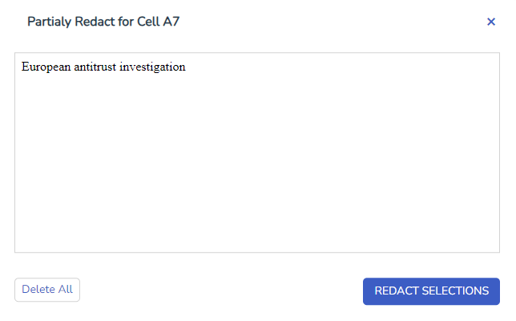
-
Select the content from the cell that you want redacted. In the example below, we selected "antitrust investigation".
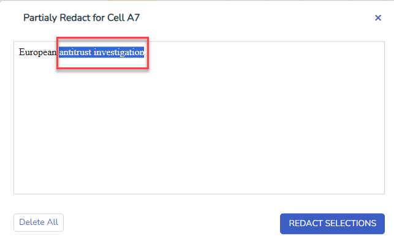
-
Next click .
-
A red line under the cell indicates it is partially redacted.
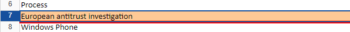
Search and Redact
For mass redactions, you can search an entire workbook or sheet for content to redact.
-
From the Toolbar, click  to open the Find & Redact window.
to open the Find & Redact window.

-
Enter your search terms. Search regular expression or a keyword.
-
Select your search scope.
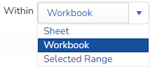
-
Select your value type.
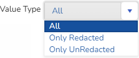
-
Select other search options as needed.
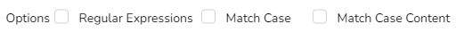
-
Click .The Find button runs the search.
-
In the example below, we entered the term "Fair" and searched for all Values on the selected Sheet.
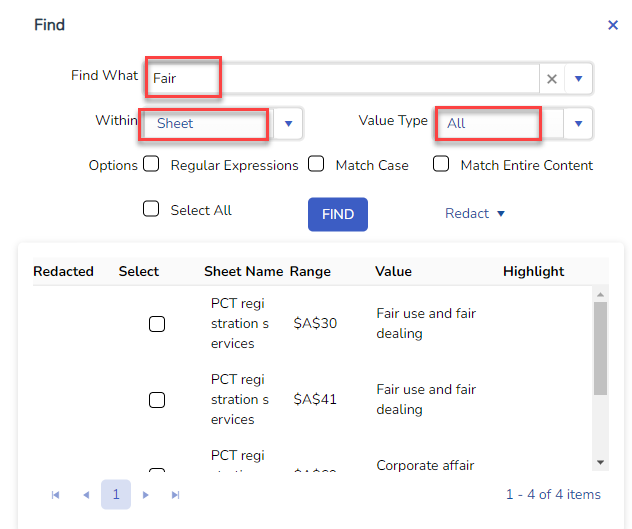
-
Select the values to be redacted. The Select All checkbox selects/unselects all of the values in the search results table. You can also manually select or unselect any values in the search results table.
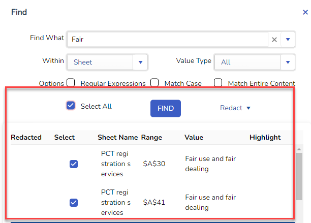
|
|
Note: Any responsive values marked as redacted in the first column can’t be selected. This is because the purpose of selecting the responsive values is to apply redactions, and the previously redaction values have to be skipped from applying overlapping redactions.
|
-
Click on the Redact button.
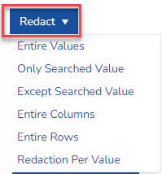
The following options to apply the redactions are as follows:
-
Entire Values: Redacts all of the values in the cells, sheet names, comments, textboxes, and header/footer.
-
Only Searched Value: Redacts only the matching part of the responsive values. This is one of the two ways to partially redact values.
-
Except Searched Value: This is opposite to the previous option Only Searched Value. This option redacts all the content other than the searched value.
-
Entire Columns: Redacts the entire columns for each responsive value.
-
Entire Rows: Redacts the entire rows for each responsive value.
-
Redaction per Value: Applies a redaction per value.
|
|
Note: When selection in the result table is changed, it automatically jumps to the location where the value resides. This facilitates a quick QC before applying mass redactions.
|
Preview Redactions
At any time you can preview how the redactions will be displayed. They will displayed in the color black.
-
From the Toolbar, click Display Options > Redacted Preview.
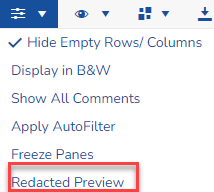
-
From the preview window, you can:
-
Select individual sheets.
-
View the location.
-
View the redaction type.
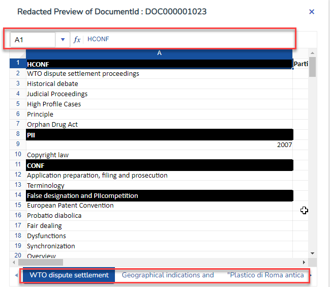
Delete Redactions
The following are the ways to remove redactions:
Manually remove a redaction
-
Mouse right-click on any selected redaction to remove the redaction. This can also be performed from the toolbar item Redaction Options > Redact | Unredact.
Remove from the Redaction List
-
Clicking the delete button after selecting a redaction in the Redaction List deletes the selected redaction.
Remove all redactions from an Active Sheet
-
From the toolbar, select Redaction Options > Clear All In Active Sheet. Removes all of the redactions in the active worksheet.
Remove all redactions from an entire Workbook
-
From the toolbar, select Redaction Options > Clear All In Workbook. Removes all of the redactions in the entire workbook.
Partial redaction removal
-
Partially select a redaction. This can be done by pressing down the keyboard’s Control key while selecting a part of the redaction. Once a part of redaction is selected, mouse right-click removes the selected portion of the redaction. The remaining part of the redaction retains the redaction properties like username, timestamp, redaction type etc.
Save Redactions
As you apply redactions they are automatically saved. You will need to check the "Is Reviewed" checkbox for each document.
-
When all redactions are completed, you can close the Review Set and submit a ticket at Services .
Related Topics
Overview: Native Redactions
Work with Native Redactions